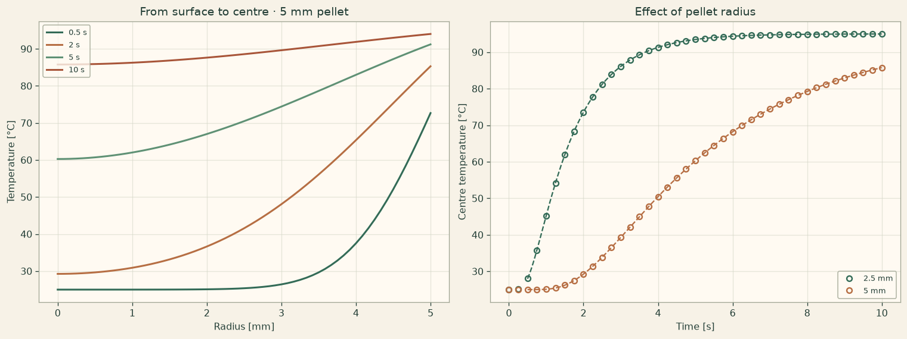

Docs › Examples › Heating a spherical ore pellet
Heat transfer · 1D
Heating a spherical ore pellet
Compare how quickly the centres of 2.5 mm and 5 mm magnetite pellets warm in a stream of hot gas.
Run locally with OneSimulation. The example downloads are free. Running them requires an activated runtime. OneSimulation 1.0 · CPython 3.13 on macOS (Apple Silicon), Ubuntu 22.04 (x86-64), and Windows x64. Installation and activation · View pilot plans. Scope of the reference checks.


What it computes
OneSimulation solves transient heat conduction on a radial mesh with a convective surface. The spherical finite element space accounts for each layer’s volume. The radial profiles show how heating from the surface delays the centre response.
What it checks
Going from 41 to 129 quadratic temperature nodes changes the centre histories by less than 0.0005 K. At 10 s the centres reach 94.98 °C and 85.78 °C. From 0.5 s onwards both agree with the twenty-mode solution within 0.123 K.
The notebook
The complete notebook, cell by cell. Run it to produce the figures and the comparison printout.
Hot gas at 95 °C flows over initially uniform magnetite pellets at 25 °C. Compare two radii, 2.5 and 5 mm, over the first ten seconds of heating. Constant properties and a uniform film coefficient preserve spherical symmetry. The only spatial coordinate is radius. The spherical finite element space supplies the volume measure \(4\pi r^2\,dr\) and the outer surface area.
At the centre the flux vanishes by symmetry. At the surface, heat enters at \(q=h(T_g-T_s)\) with \(h=1000\) W/(m² K). The model covers sensible heating before drying or oxidation changes the pellet properties.
import numpy as np
from onesim.cad.d1 import Line
from onesim.materials import IsotropicSolid
from onesim.meshing import StructuredLineMesher
from onesim.numerics import Numerics
from onesim.numerics.fem import FiniteElement, Lagrange, SphericalLineH1SpaceFactory
from onesim.numerics.linear import SparseDirect
from onesim.numerics.time import BDF, BackwardEuler
from onesim.physics.heat_transfer import ConvectiveHeatFlux, HeatConduction, HeatFlux
from onesim.simulation import Problem, Simulation
from onesim.simulation.initial_conditions import InitialValue
from onesim.visualization import plots, theme
from scipy.optimize import brentq
theme.set()Resolve each pellet on two radial meshes
The thermal inputs are density 2000 kg/m³, specific heat 300 J/(kg K) and conductivity 0.5 W/(m K). Compare 20 and 64 quadratic radial elements with the same time step.
density, capacity, conductivity = 2000.0, 300.0, 0.5
initial, gas, film = 298.15, 368.15, 1000.0
ore = IsotropicSolid(
density=density,
specific_heat_capacity=capacity,
thermal_conductivity=conductivity,
youngs_modulus=1e9,
poisson_ratio=0.25,
thermal_expansion_coefficient=0,
)
numerics = Numerics(
spatial=FiniteElement(element=Lagrange(order=2), provider=SphericalLineH1SpaceFactory()),
time_integrator=BDF(order=2, startup=BackwardEuler()),
linear_solver=SparseDirect(),
)
temperature = {}
for radius in (0.0025, 0.005):
line = Line(start=(0, 0, 0), end=(radius, 0, 0))
heat = HeatConduction(domain=line.line, material=ore)
surface = ConvectiveHeatFlux(
physics=heat,
boundary=line.boundaries.end,
heat_transfer_coefficient=film,
ambient_temperature=gas,
)
symmetry = HeatFlux(physics=heat, boundary=line.boundaries.start, value=0)
problem = Problem(
name="Pellet heating",
geometry=line,
physics=(heat,),
boundary_conditions=(surface, symmetry),
initial_conditions=(InitialValue(heat.temperature, initial),),
)
histories = {}
for cells in (20, 64):
mesh = StructuredLineMesher(cells=cells).generate(line)
field = (
Simulation(problem=problem, mesh=mesh, numerics=numerics)
.run(
start_time=0,
end_time=10,
time_step=0.05,
)
.field(heat.temperature)
)
histories[cells] = field
print(f"{radius * 1000:g} mm pellet: {mesh.cell_count} elements, {len(field.space.dof_coordinates)} temperature nodes")
temperature[radius] = histories[64]
coarse = histories[20].time_series(points=[(0, 0, 0)])[1]
fine = histories[64].time_series(points=[(0, 0, 0)])[1]
print(f"Maximum centre-temperature change on refinement: {np.max(np.abs(fine - coarse)):.5f} K")Check the centre temperature
The exact convective sphere solution has eigenvalues satisfying \(\lambda\cot\lambda=1-\mathrm{Bi}\), where \(\mathrm{Bi}=hR/k\). At the centre its modes decay as \(\exp(-\lambda^2\alpha t/R^2)\). Use the first twenty terms after 0.5 s, when the higher modes have decayed. Reference: H. S. Carslaw and J. C. Jaeger, Conduction of Heat in Solids, 2nd ed. (1959).
centre, reference = {}, {}
for radius, field in temperature.items():
biot = film * radius / conductivity
modes = np.array(
[
brentq(
lambda x: x * np.cos(x) + (biot - 1) * np.sin(x), (n + 0.5) * np.pi, (n + 1) * np.pi
)
for n in range(20)
]
)
amplitudes = 4 * (np.sin(modes) - modes * np.cos(modes)) / (2 * modes - np.sin(2 * modes))
times, values = field.time_series(points=[(0, 0, 0)])
selected = times >= 0.5
decay = conductivity / (density * capacity) * (modes / radius) ** 2
exact = gas + (initial - gas) * (np.exp(-np.outer(times[selected], decay)) @ amplitudes)
key = f"{1000 * radius:g} mm"
centre[key] = (times[::5], values[::5] - 273.15)
reference[key] = (times[selected], exact - 273.15)
print(
f"{key}: centre at 10 s = {values[-1] - 273.15:.2f} °C; "
f"largest centre error from 0.5 to 10 s = {np.max(np.abs(values[selected] - exact)):.3f} K"
)Inside the larger pellet
The surface responds first. Compare its radial temperature gradients with the centre histories of both pellets. The points in the right panel are finite element results.
r = np.linspace(0, 0.005, 61)
points = np.column_stack((r, 0 * r, 0 * r))
profiles = {
f"{t:g} s": (1000 * r, temperature[0.005].evaluate(points, time=t) - 273.15)
for t in (0.5, 2, 5, 10)
}
fig = plots.figure(1, 2, size=(13, 4.8))
plots.line(
y=profiles,
xlabel="Radius [mm]",
ylabel="Temperature [°C]",
title="From surface to centre · 5 mm pellet",
legend="upper left",
ax=fig[0],
)
plots.line(
points=centre,
reference=reference,
xlabel="Time [s]",
ylabel="Centre temperature [°C]",
title="Effect of pellet radius",
legend="lower right",
ax=fig[1],
)
plots.show()